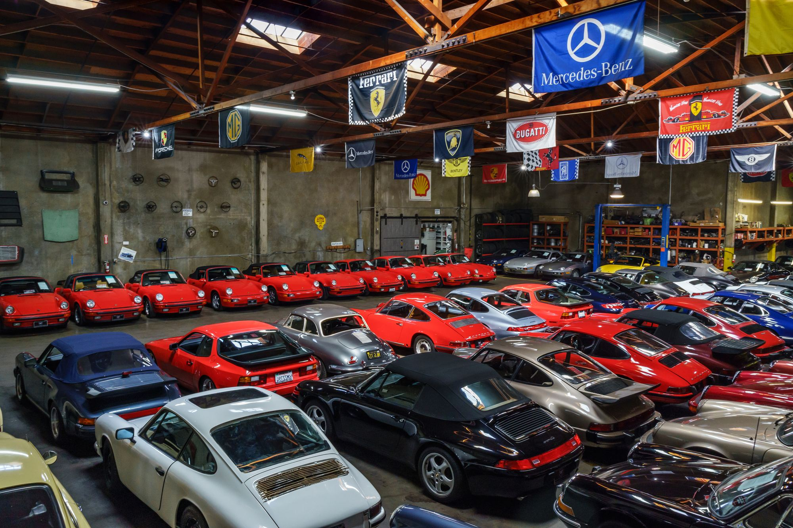
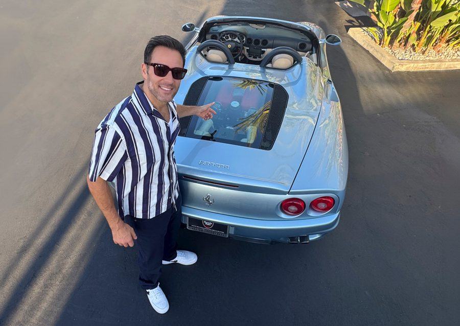
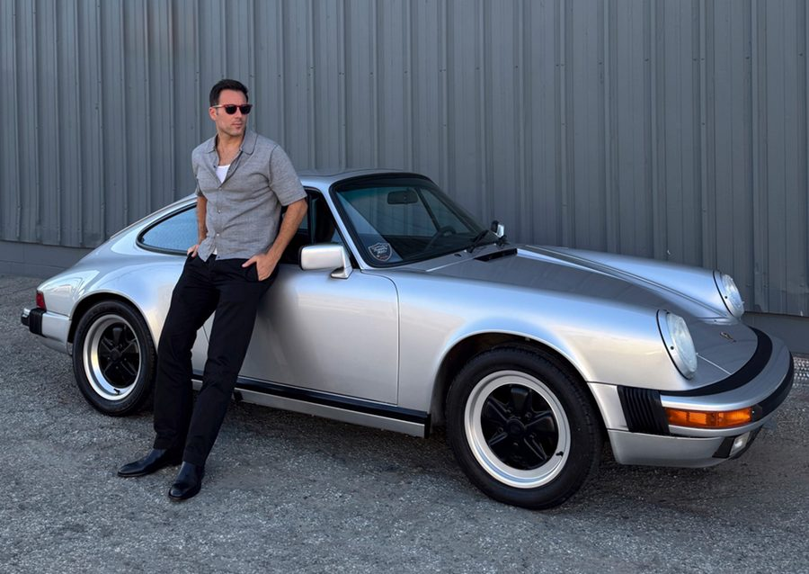
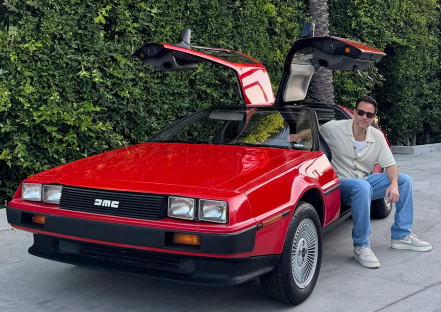

The world's largest dealer of European and American classic cars. Hundreds of vehicles in-stock, every day!


I've been buying and selling the world's finest classic cars since 2008.
What began with a single Porsche is now the largest collection of European and American classics under one roof in Los Angeles — every car personally reviewed, inspected and photographed before it ever reaches you.
From a single Porsche to an entire collection — Alex personally reviews every car offered. Nationwide, In-Any-Condition.
Trusted by collectors worldwide · Serving enthusiasts since 2008
Alex and his team made selling my classic Porsche absolutely seamless — professional, fair and a genuine pleasure to work with.
The finest collection of European classics I've seen under one roof. They knew the car's history better than I did.
From the first call to delivery, every detail was handled with care. This is how buying a classic should feel.


Stories from the showroom — new arrivals, events and the cars worth keeping.

An ancient town in the Emilia-Romagna region of northern Italy, Modena was not only the birthplace of Enzo Ferrari, but also of operatic tenor Luciano Pavarotti and chef Massimo Bottura.
Read More
The very first Porsche gearbox was a transaxle, a common case sharing the gear stack and the differential — a design theory every 356-to-997 street and race car shares.
Read More
Singular among automobiles, the gorgeous rear-engined DeLorean DMC-12 exists in a category of one — a machine charged with hypnotic allure, daring engineering, renegade spirit, and a whiff of delicious controversy.
Read More